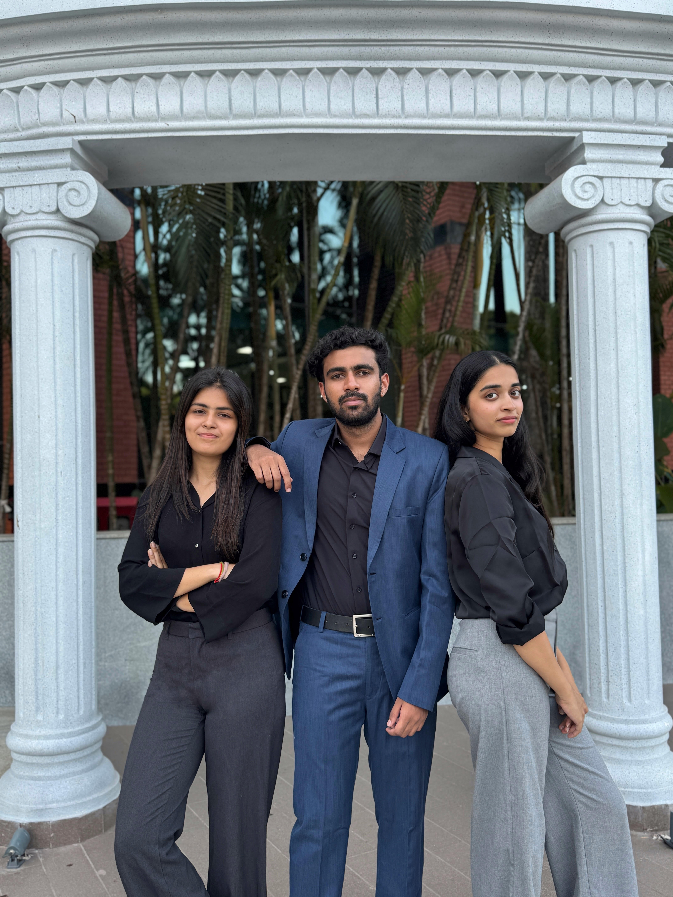
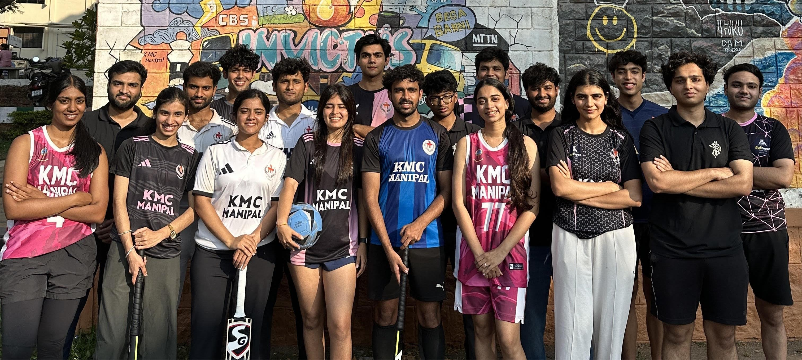
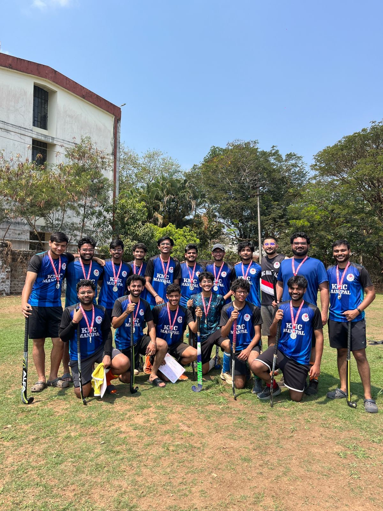
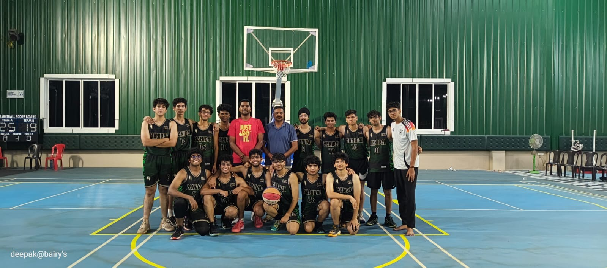
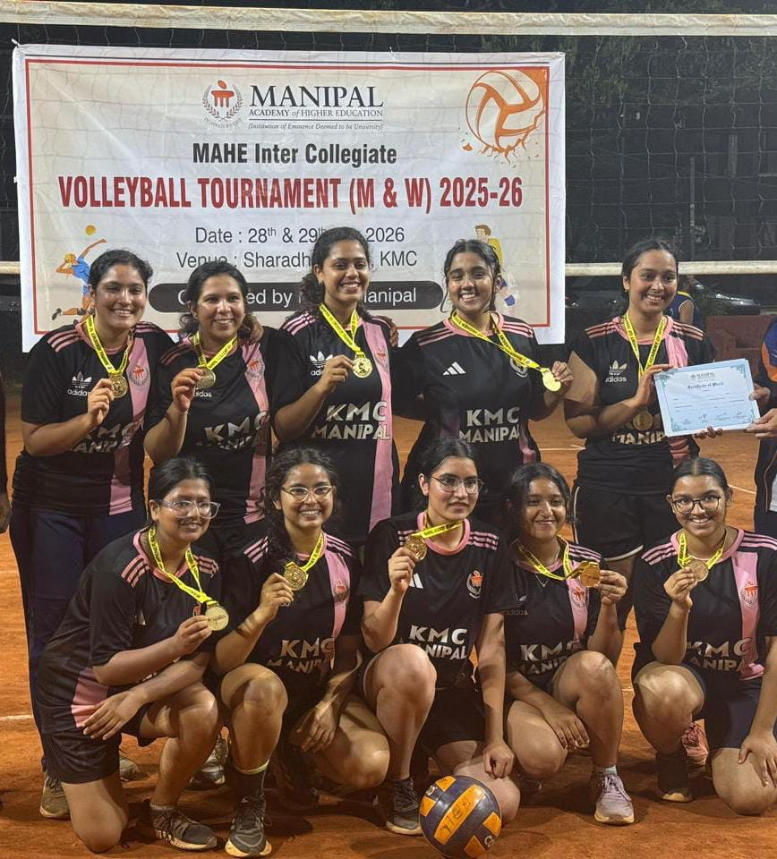

Kasturba Medical College
Driving passion, teamwork and excellence on and off the field.
The KMC Sports Committee promotes a healthier, more connected student community through well-run events, inclusive participation, and spirited competition.
From Verve to Invictus and everything in between, we create sporting experiences that feel organized, welcoming, and memorable for every student.

Committee Spotlight
Leadership that keeps every event moving.
Focused on coordination, communication, and a student-first experience across tournaments, fitness initiatives, and campus sporting culture.

About The Committee
A reliable student body for planning, promoting, and powering sport at KMC.
The Kasturba Medical College Sports Committee works to make athletics a meaningful part of campus life. We support competitive events, recreational participation, and community-building activities that help students stay active, balanced, and connected.
Our role goes beyond scheduling matches. We coordinate logistics, encourage broad participation, and help create a sports culture that is disciplined, positive, and inclusive.
What We Stand For
- Efficient planning and smooth execution
- Inclusive participation across batches
- Fair play, teamwork, and student wellbeing
- Better visibility for sports initiatives on campus
Credentials & Events
Built on structure, consistency, and event-day readiness.
Operational Credentials
- Experienced in student event coordination and execution
- Strong volunteer management and communication workflow
- Dependable planning for registrations, fixtures, and updates
Campus Sports Coverage
- Sportzquake
- Verve
- Invictus
- HPL (Hockey Premier League)
- KTPL (KMC Tennis Premier League)
- BCL (Box Cricket League)
- SPL (Soccer Premier League)
- FPL (Football Premier League)
- Bowloma
- Showdown
- Mental Health Marathon
Student Experience
- Improved event communication and turnout
- Encouraged wider participation beyond competitive teams
- Helped make sports programming more visible and approachable
Statement Of Purpose
To make every sporting event at KMC feel organized, inclusive, and worth showing up for.
We aim to build a sports culture where participation is encouraged, communication is clear, and every event reflects the professionalism and spirit of the KMC student community.
Event Gallery
Snapshots from a campus that plays together.

Hockey Premier League
Champions celebrating after a hard-fought victory.

Basketball
Court-ready and competitive at every fixture.

Volleyball Tournament
MAHE Inter Collegiate Champions 2025–26.
Calendar
Stay updated with match dates, event windows, and committee activity.
Upcoming Dates & Events
This embedded calendar can be updated with the committee's official Google Calendar so students can quickly track registrations, fixtures, and event timelines.
Contact